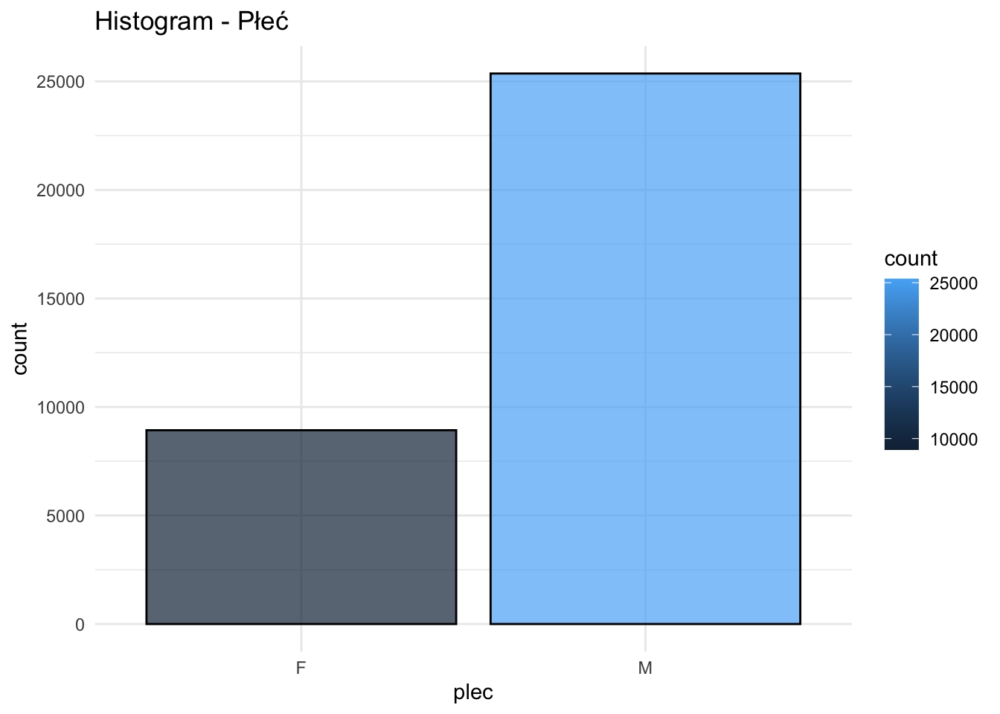
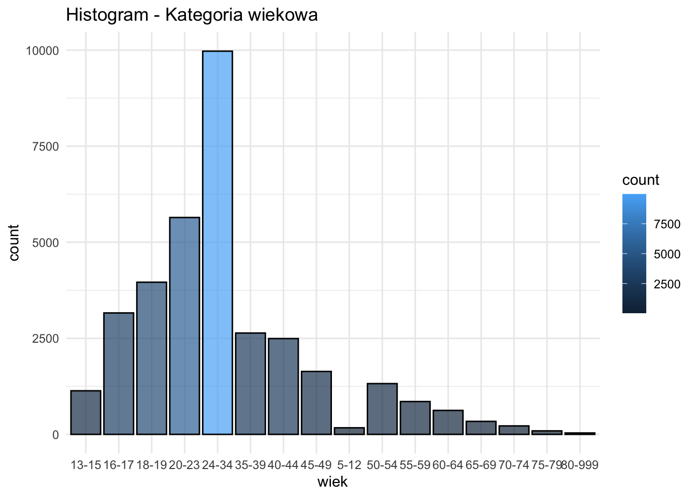
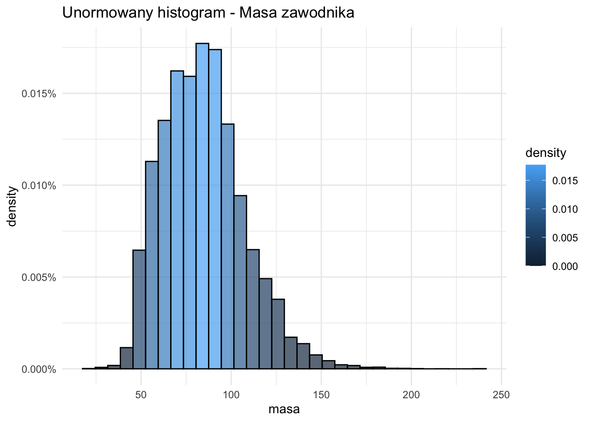
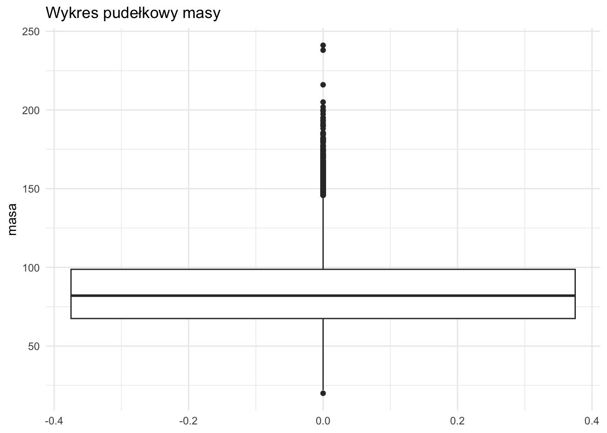
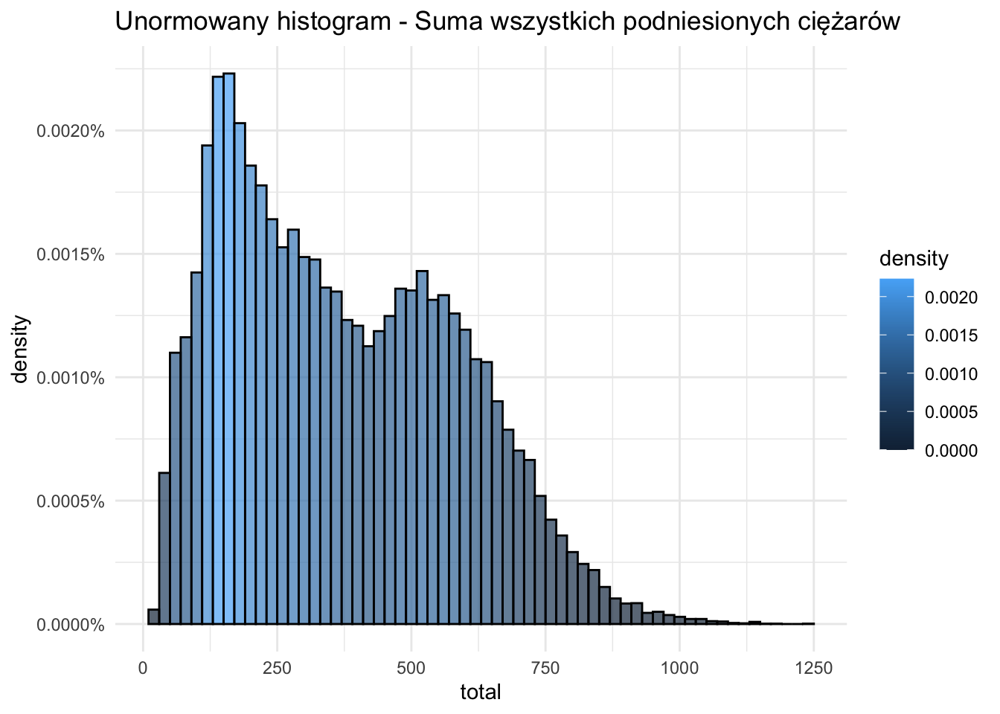
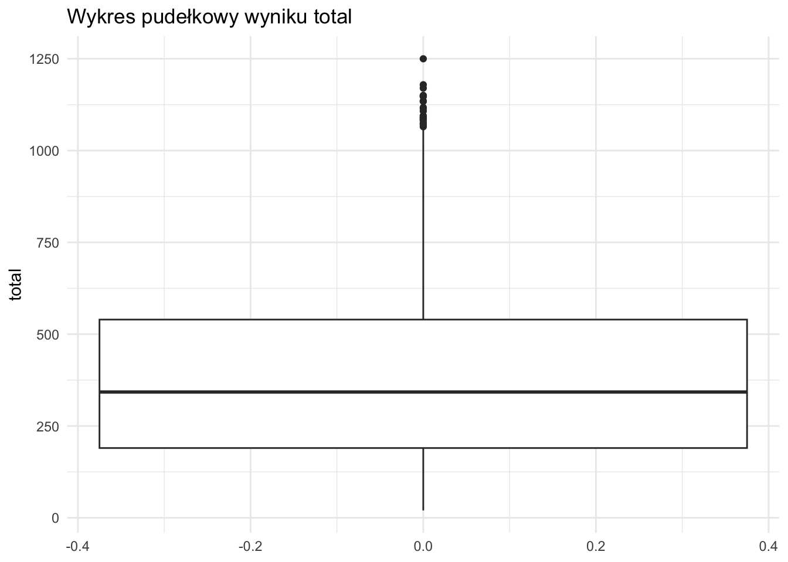

── Attaching core tidyverse packages ──────────────────────── tidyverse 2.0.0 ──
✔ dplyr 1.1.3 ✔ readr 2.1.4
✔ forcats 1.0.0 ✔ stringr 1.5.0
✔ ggplot2 3.4.3 ✔ tibble 3.2.1
✔ lubridate 1.9.3 ✔ tidyr 1.3.0
✔ purrr 1.0.2
── Conflicts ────────────────────────────────────────── tidyverse_conflicts() ──
✖ dplyr::filter() masks stats::filter()
✖ dplyr::lag() masks stats::lag()
ℹ Use the conflicted package (<http://conflicted.r-lib.org/>) to force all conflicts to become errorsAnaliza wyników w trójboju
1. Wstęp
Przedmiotem analizy są dane ze zbioru zawierającego informacje na temat trójboistów zrzeszonch w ramach federacji IPF. Dane zostały udostępnione na warunkach licencji GNU AGPLv3. Głównymi zmiennymi, które będą nas interesować są AgeClass (zmienne kategoryczna określająca przedział wiekowy zawodnika) oraz zmienne ciągłe BodyweightKg, Best3BenchKg, Best3SquatKg, Best3DeadliftKg i TotalKg, które wyrażają masę ciała zawodnika, wyniki w poszcególnych bojach (wyciskanie na ławce, przysiad ze sztangą oraz martwy ciąg), jak i wynik całkowity.
1.1 Pytania badawcze
W ramach analizy postaramy się odpowiedzieć na następujące pytania:
Czy istnieje zależność między wagą a wynikami w poszczególnych bojach?
Jakie parametry opisują rozkłady poszczególnych zmiennych?
W jaki sposób różnią się rozkłady wyników oraz wagi w zależności od wieku?
1.2 Ładowanie danych
Wpierw przystąpimy do załadowania potrzebnych bibliotek
Aby załączyć nasze dane musimy rozważyć w jaki sposób w naszych danych przedstawiony jest brak danych. W naszym pliku csv taki rekord to po prostu brak danych w wierszu.
probka <- read.csv("../powerlifting.csv", na.strings = "")Tak się prezentuje 10 początkowych obserwacji
head(probka) Name Sex Event Equipment Age AgeClass BirthYearClass
1 K Leong M B Raw NA 18-19 <NA>
2 Sergei Khitrov M SBD Raw 38.0 35-39 24-39
3 Michael Werschem M SBD Wraps 20.0 20-23 19-23
4 Ray Hickman M B Multi-ply 28.5 24-34 24-39
5 John Robinson M B Multi-ply NA 40-44 40-49
6 Alexis Lafever F SBD Single-ply NA <NA> <NA>
Division BodyweightKg WeightClassKg Squat1Kg Squat2Kg Squat3Kg Squat4Kg
1 17+ 82.5 82.5 NA NA NA NA
2 Open 86.6 90 200 210 212.5 NA
3 Juniors 20-23 103.6 110 175 195 225.0 NA
4 Open 75.0 75 NA NA NA NA
5 Masters 40-44 NA 140+ NA NA NA NA
6 Girls 82.1 82.3 NA NA NA NA
Best3SquatKg Bench1Kg Bench2Kg Bench3Kg Bench4Kg Best3BenchKg Deadlift1Kg
1 NA NA NA NA NA 65.00 NA
2 212.5 160.0 -165 165.0 NA 165.00 240.0
3 225.0 112.5 125 -137.5 NA 125.00 207.5
4 NA NA NA NA NA 177.50 NA
5 NA NA NA NA NA 328.85 NA
6 NA NA NA NA NA NA NA
Deadlift2Kg Deadlift3Kg Deadlift4Kg Best3DeadliftKg TotalKg Place Dots
1 NA NA NA NA 65.00 6 44.03
2 260.0 270 NA 270.0 647.50 6 427.10
3 237.5 NA NA 237.5 587.50 1 356.26
4 NA NA NA NA 177.50 2 127.34
5 NA NA NA NA 328.85 1 NA
6 NA NA NA NA NA DQ NA
Wilks Glossbrenner Goodlift Tested Country State Federation
1 43.54 41.90 32.75 Yes Australia QLD PA
2 421.86 405.01 87.74 <NA> Russia <NA> IPL
3 352.75 336.82 72.99 Yes USA OK USPA
4 126.48 122.21 68.34 Yes USA <NA> WABDL
5 NA NA NA <NA> USA SC SPF
6 NA NA NA Yes <NA> <NA> THSWPA
ParentFederation Date MeetCountry MeetState MeetTown
1 IPF 2002-01-01 Australia <NA> <NA>
2 IPL 2017-12-15 Russia <NA> Dolgoprudnyy
3 IPL 2022-06-11 USA OK Norman
4 <NA> 2000-08-05 USA OR Wilsonville
5 <NA> 2008-07-19 USA AL Tuscaloosa
6 <NA> 2017-01-14 USA TX Coronado Middle School
MeetName
1 Australian Schools Postal Bench Press
2 World Cup
3 Drug Tested Oklahoma State Championships
4 World Cup
5 Temple Gym Classic
6 Plainview InvitationalInteresować nas będą tylko zmienne Sex, AgeClass, BodyWeightKg i TotalKg
probka <- probka[, c("Sex", "AgeClass", "BodyweightKg", "TotalKg")]
summary(probka) Sex AgeClass BodyweightKg TotalKg
Length:49999 Length:49999 Min. : 20.00 Min. : 12.5
Class :character Class :character 1st Qu.: 67.20 1st Qu.: 204.1
Mode :character Mode :character Median : 81.90 Median : 356.1
Mean : 84.12 Mean : 378.3
3rd Qu.: 98.79 3rd Qu.: 533.0
Max. :241.10 Max. :1250.0
NA's :644 NA's :3339 Napotykamy pierwszy problem. Wszystkie zmienne są typu character, gdy powinny być typu
numericdla BodyweightKg, TotalKgfactordla Sex, AgeClass
Dokonajmy więc konwersji
probka$BodyweightKg <- as.numeric(probka$BodyweightKg)
probka$TotalKg <- as.numeric(probka$TotalKg)
probka$Sex <- as.factor(probka$Sex)
probka$AgeClass <- as.factor(probka$AgeClass)summary(probka) Sex AgeClass BodyweightKg TotalKg
F:12515 24-34 :10615 Min. : 20.00 Min. : 12.5
M:37484 20-23 : 6007 1st Qu.: 67.20 1st Qu.: 204.1
18-19 : 4300 Median : 81.90 Median : 356.1
16-17 : 3383 Mean : 84.12 Mean : 378.3
35-39 : 2819 3rd Qu.: 98.79 3rd Qu.: 533.0
(Other): 9457 Max. :241.10 Max. :1250.0
NA's :13418 NA's :644 NA's :3339 Dokonamy teraz zmiany nazw kolumn na bardziej przystępne
colnames(probka) <- c("plec", "wiek", "masa", "total")
head(probka) plec wiek masa total
1 M 18-19 82.5 65.00
2 M 35-39 86.6 647.50
3 M 20-23 103.6 587.50
4 M 24-34 75.0 177.50
5 M 40-44 NA 328.85
6 F <NA> 82.1 NANasze dane mają również rekordy z brakiem danych, zatem kolejnym krokiem jest usunięcie wierszy, w których takie braki się pojawiają.
probka <- probka %>% drop_na()Dzięki temu otrzymujemy zestaw danych, który swobodnie może być poddawanym analizom.
2. Analiza jednowymiarowa
W tej części zajmiemy się analizą statystyczną wybranych przez nas kategorii. Zmienne kategoryczne mają ograniczone możliwości co do analizy, dlatego ograniczymy się do histogramu i przedstawienia liczności.
2.1 Zmienna: Płeć
Dla tej zmiennej występują tylko dwie wartości M, F, oznaczające płeć zawodnika/zawodniczki. Przewaga mężczyzn nie jest zaskakująca.
Code
ggplot(probka, aes(x = plec, y = ..count.., fill = ..count..)) +
geom_bar(color = "black", alpha = 0.7, position = "identity") +
ggtitle("Histogram - Płeć") +
theme_minimal()
plec <- table(probka$plec)
procent_danych <- round(prop.table(plec) * 100, digits=2)
stats <- data.frame(Plec = as.character(names(plec)), Licznosc = as.numeric(plec), Procent = as.numeric(procent_danych))
knitr::kable(stats)
| Plec | Licznosc | Procent |
|---|---|---|
| F | 8929 | 26.04 |
| M | 25363 | 73.96 |
Histogram zmiennej - Płeć
2.2 Zmienna: Kategoria wiekowa
Występuje tutaj 16 różnych wartości, przypisujących danego zawodnika do danej kategorii. Najwięcej osób startuje w kategorii wiekowej 24-34, co stanowi ok. 29% wszystkich zawodników. Kategorię 80-999 należy rozumieć jako osoby w wieku \(\ge 80\)
Code
ggplot(probka, aes(x = wiek, y = ..count.., fill = ..count..)) +
geom_bar(color = "black", alpha = 0.7, position = "identity") +
ggtitle("Histogram - Kategoria wiekowa") +
theme_minimal()
wiek_ilosc <- table(probka$wiek)
procent_danych <- round(prop.table(wiek_ilosc) * 100, digits=2)
stats <- data.frame(Wiek = as.character(names(wiek_ilosc)), Licznosc = as.numeric(wiek_ilosc), Procent = as.numeric(procent_danych))
knitr::kable(stats)
| Wiek | Licznosc | Procent |
|---|---|---|
| 13-15 | 1134 | 3.31 |
| 16-17 | 3160 | 9.21 |
| 18-19 | 3960 | 11.55 |
| 20-23 | 5644 | 16.46 |
| 24-34 | 9973 | 29.08 |
| 35-39 | 2637 | 7.69 |
| 40-44 | 2493 | 7.27 |
| 45-49 | 1637 | 4.77 |
| 5-12 | 171 | 0.50 |
| 50-54 | 1321 | 3.85 |
| 55-59 | 854 | 2.49 |
| 60-64 | 623 | 1.82 |
| 65-69 | 338 | 0.99 |
| 70-74 | 220 | 0.64 |
| 75-79 | 91 | 0.27 |
| 80-999 | 36 | 0.10 |
Histogram zmiennej - Kategoria wiekowa
2.3 Zmienna: Waga zawodnika
Dla tej zmiennej ciągłej można już przeprowadzić szereg analiz statystycznych oraz narysować wykres pudełkowy.
Code
ggplot(probka, aes(x = masa, y = ..density.., fill = ..density..)) +
geom_histogram(binwidth = 7, color = "black", alpha = 0.7, position = "identity") +
ggtitle("Unormowany histogram - Masa zawodnika") +
theme_minimal() +
scale_y_continuous(labels = scales::percent_format(scale = 1))
ggplot(probka, aes(y = masa)) +
geom_boxplot() +
ggtitle("Wykres pudełkowy masy") +
theme_minimal()

Wykresy dla zmiennej Masa
Na histogramie widzimy, że jest on prawostronnie skośny i prawie symetryczny. Ponadto zarówno histogram, jak i wykres pudełkowy wykazują dużą obecność tzw. outliersów, czyli wartości odstających, wywołanych niskim rozstępem międzykwartylowym. Histogram przypomina histogram rozkładu normalnego. Dodatkowo wydaje się być platykurtyczny, ze względu na swój płaski szczyt. Poniżej w tabeli przedstawione są podstawowe statystki dla tej zmiennej.
Code
summary_df <- data.frame(
Statystyki = c("Minimum", "Pierwszy kwartyl", "Mediana", "Srednia", "Trzeci kwartyl", "Rozstep miedzykwartylowy", "Maximum", "Wariancja", "Skosnosc", "Kurtoza"),
Wartosci = c(min(probka$masa), quantile(probka$masa, 0.25), median(probka$masa), mean(probka$masa), quantile(probka$masa, 0.75), IQR(probka$masa), max(probka$masa), var(probka$masa), skewness(probka$masa), kurtosis(probka$masa))
)
knitr::kable(summary_df)| Statystyki | Wartosci |
|---|---|
| Minimum | 20.0000000 |
| Pierwszy kwartyl | 67.5000000 |
| Mediana | 82.0300000 |
| Srednia | 84.4770331 |
| Trzeci kwartyl | 98.7500000 |
| Rozstep miedzykwartylowy | 31.2500000 |
| Maximum | 241.1000000 |
| Wariancja | 507.5577170 |
| Skosnosc | 0.6766139 |
| Kurtoza | 0.7661658 |
Wartość mediany jest zbliżona do wartości średniej, co wskazuje na dość dużą symetryczność rozkładu. Brak ich pokrycia wynika z istnienia wartości odstających. Skośność większa od 0 wskazuje na prawoskośność, co zgadza się z wnioskami odnośnie histogramu oraz jego wyglądem. Kurtoza mniejsza od 3 oznacza, że rozkład jest bardziej płaski, niż rozkład normalny. Istnieje jednak wiele podobieństw pomiędzy rozkładem mas zawodników oraz rozkładem normalnym. Rozbieżność występuje prawdopodobnie ze względu na niestandardowe warunki, którymi są zawody w trójboju siłowym. Zbiorem danych są sportowcy, a nie losowa grupa ludzi, przez co rozkład masy zawodników może bardziej różnić się od rozkładu normalnego, niż losowa próba z populacji.
2.4 Zmienna: Łączna masa
Code
ggplot(probka, aes(x = total, y = ..density.., fill = ..density..)) +
geom_histogram(binwidth = 20, color = "black", alpha = 0.7, position = "identity") +
ggtitle("Unormowany histogram - Suma wszystkich podniesionych ciężarów") +
theme_minimal() +
scale_y_continuous(labels = scales::percent_format(scale = 1))
ggplot(probka, aes(y = total)) +
geom_boxplot() +
ggtitle("Wykres pudełkowy wyniku total") +
theme_minimal()

Wykresy dla zmiennej Total
Code
summary_df <- data.frame(
Statystyki = c("Minimum", "Pierwszy kwartyl", "Mediana", "Srednia", "Trzeci kwartyl", "Rozstep miedzykwartylowy", "Maximum", "Wariancja", "Skosnosc", "Kurtoza"),
Wartosci = c(min(probka$total), quantile(probka$total, 0.25), median(probka$total), mean(probka$total), quantile(probka$total, 0.75), IQR(probka$total), max(probka$total), var(probka$total), skewness(probka$total), kurtosis(probka$total))
)
knitr::kable(summary_df)| Statystyki | Wartosci |
|---|---|
| Minimum | 20.0000000 |
| Pierwszy kwartyl | 190.0000000 |
| Mediana | 342.5000000 |
| Srednia | 373.7271667 |
| Trzeci kwartyl | 539.7700000 |
| Rozstep miedzykwartylowy | 349.7700000 |
| Maximum | 1250.0000000 |
| Wariancja | 45169.3002501 |
| Skosnosc | 0.4391137 |
| Kurtoza | -0.6666975 |